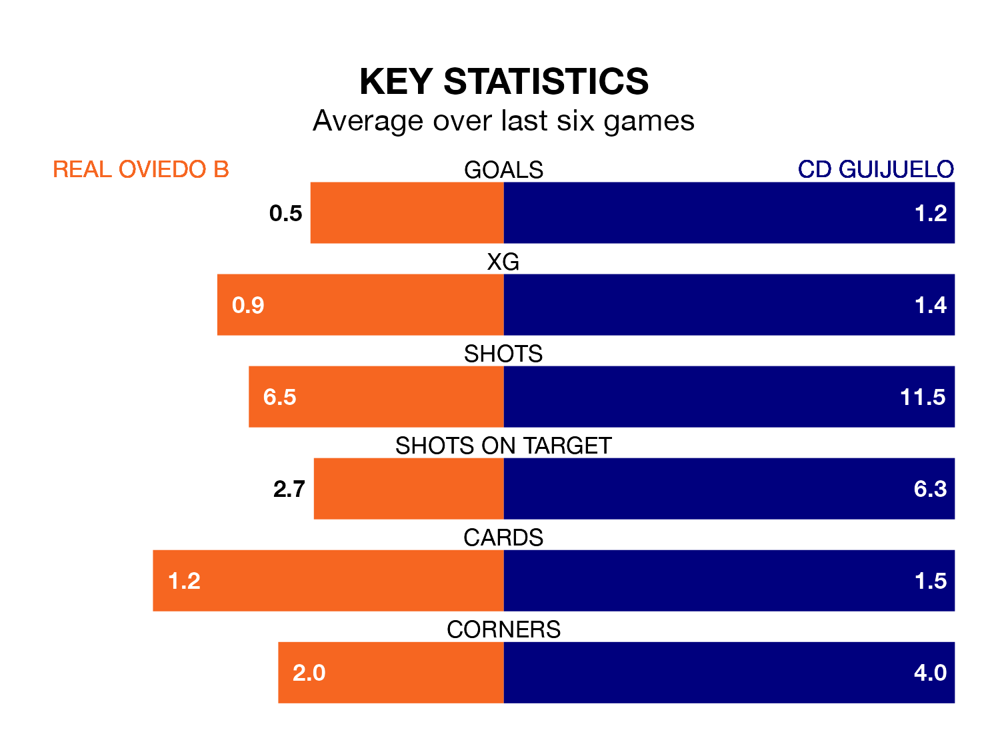

CD Guijuelo travel to Real Oviedo B on early Sunday in the Segunda División RFEF Group 1.
The visitors come into the game on the back of a defeat in their last match, having lost to Pontevedra CF 2-1 at home.
Oviedo B, meanwhile, won their last match, 1-0 against Cayón.
Oviedo B are 14th in the table after 22 games, of which they have won four and drawn 10, earning 22 points.
Guijuelo are nine places ahead of the hosts in fifth, with nine wins and six draws putting them on 33 points.
With 18 goals in 22 games so far this season, Oviedo B are the league's third-lowest scorers with 0.8 goals per game. And they are conceding more than average, letting in 26 goals at a rate of 1.2 per game.
The away team are also below average scorers, with 1.0 goal per game, compared to a league average of 1.1. They have also conceded 1.0 goal per game.
Oviedo B are in disappointing form in the Segunda División RFEF Group 1, with one win and three draws from their last six games.
With two wins and three draws over that period, Guijuelo's form is better – they have taken nine points from 18, compared to the home side's six.
In the last five years, Oviedo B and Guijuelo have played each other on five occasions. Oviedo B won three of them and they drew twice.
On average, Oviedo B scored 1.8 goals and Guijuelo 0.8 in those matches.
Their last meeting was on October 7, when they played out a 1-1 draw.
Updated: 09:02 (UTC), 13/02/24